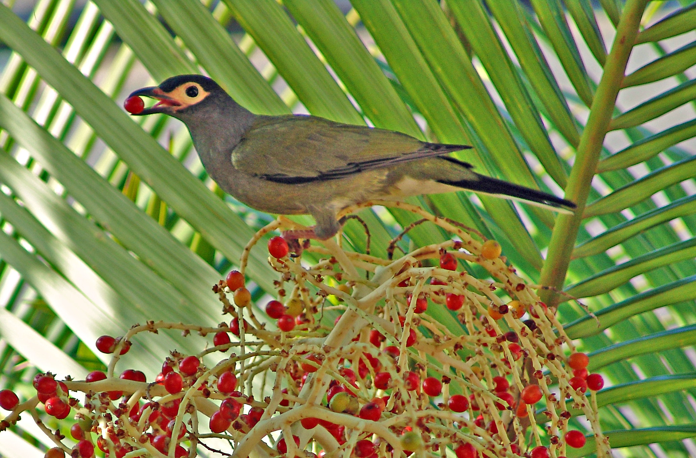

IUCN Conservation Status (quick guide)
- Least Concern: species are widespread or abundant and face no immediate major threats.
- Near Threatened: species close to qualifying for a threatened category or likely to in the near future.
- Vulnerable: species facing a high risk of extinction in the wild without conservation actions.
Species Groups & Brief Explanation
PNG's bird fauna includes several important groups: birds-of-paradise (renowned for male courtship displays and sexual dimorphism), parrots and cockatoos (colorful, often noisy, important seed and pollination agents), pigeons and doves (key seed dispersers), kingfishers and raptors (predators), bowerbirds and riflebirds (interesting courtship behaviour), and many small passerines that occupy understory and canopy niches. Mountain uplift and island isolation drove speciation, producing many endemic lineages.
Species & Where to Find Them (alphabetical)
Australasian Figbird (Sphecotheres vieilloti)Least Concern

Fun fact: They often gather in noisy fruiting trees and help disperse fig seeds.
Black Sicklebill (Epimachus fastuosus)Least Concern
.jpeg)
Fun fact: Males have long curved tail feathers used in dramatic aerial displays.
Blyth's Hornbill (Rhyticeros plicatus)Near Threatened
.jpeg)
Fun fact: Hornbills are important seed dispersers and often nest in tree hollows.
Blue-eyed Cockatoo (Cacatua ophthalmica)Vulnerable
.jpg)
Fun fact: Named for its pale blue eye-ring — a distinctive field mark.
Brown Cuckoo-Dove (Macropygia amboinensis)Least Concern

Fun fact: Often found in pairs or small groups, quietly feeding on fig trees.
Carola's Parotia (Parotia carolae)Near Threatened
.jpg)
Fun fact: Males perform a ballet-like courtship with shiny breast feathers that flare to catch light.
Eclectus Parrot (Eclectus roratus)Least Concern
.jpg)
Fun fact: Sexually dimorphic — males are green and females are red with blue cheeks.
Emperor Bird-of-Paradise (Paradisaea guilielmi)Near Threatened
.jpg)
Fun fact: Males have long flank plumes used in display, making them very showy.
Golden Monarch (Carterornis chrysomela)Least Concern
.jfif)
Fun fact: Small vivid yellow bird with black wings and tail, often seen on exposed sunlit branches sallying for insects.
Greater Bird-of-Paradise (Paradisaea apoda)Near Threatened
.jpg)
Fun fact: Historically prized for their long flank plumes used in ceremonial dress.
Hooded PitohuiLeast Concern

Fun fact: Contains batrachotoxin in its skin and feathers — a rare toxic bird.
Hooded Pitta (Pitta sordida)Near Threatened
.jpg)
Fun fact: Known for its vivid green body and black-and-red head colouring.
King of Saxony Bird-of-Paradise (Pteridophora alberti)Near Threatened
.jpg)
Fun fact: Males have two extraordinary head wires tipped with flags used in display.
Lesser Bird-of-Paradise (Paradisaea minor)Least Concern
.jpg)
Fun fact: Males perform elaborate dances on display perches to attract females.
Magnificent Riflebird (Ptiloris magnificus)Least Concern
.jpg)
Fun fact: Males display with a unique wing-flicking motion and shiny plumage flash.
New Guinea Friarbird (Philemon novaeguineae)Least Concern
.jpg)
Fun fact: Friarbirds have a bare patch of skin on the face and a loud, raucous call.
New Guinea Kingfisher (various species)Least Concern

Fun fact: Many kingfishers in PNG have bright colours and are easier to spot than one might expect.
Palm Cockatoo (Probosciger aterrimus)Near Threatened
.jpg)
Fun fact: Males use sticks to drum on hollow trees during courtship displays.
Paradise-crow (Lycocorax pyrrhopterus)Least Concern
.jpg)
Fun fact: Despite its name, it's more crow-like and lacks the flamboyance of birds-of-paradise.
Pheasant Pigeon (Otidiphaps nobilis)Near Threatened
.jpg)
Fun fact: These ground-dwelling pigeons are shy and often only revealed by their deep calls.
Raggiana Bird-of-Paradise (Paradisaea raggiana)Least Concern
.jpg)
Fun fact: The national bird of Papua New Guinea — its plumes are used in cultural dress.
Rainbow Lorikeet (Trichoglossus moluccanus)Least Concern
.jpg)
Fun fact: Lorikeets have brush-tipped tongues adapted to feed on nectar.
Regent Bowerbird (Sericulus chrysocephalus)Least Concern
.jpg)
Fun fact: Males build decorated bowers to attract females.
Southern Cassowary (Casuarius casuarius)Vulnerable
.jpg)
Fun fact: Cassowaries are one of the few birds that disperse very large seeds whole.
Spangled Drongo (Dicrurus bracteatus)Least Concern
.jpg)
Fun fact: Drongos are acrobatic fliers and often mimic calls to distract other birds.
Superb Bird-of-Paradise (Lophorina superba)Least Concern
.jpg)
Fun fact: Males transform their appearance during display to a jet-black oval with shimmering blue-green breast shield.
Twelve-wired Bird-of-Paradise (Seleucidis melanoleucus)Near Threatened

Fun fact: Male has twelve wire-like flank feathers used to display to females.
Victoria Crowned Pigeon (Goura victoria)Vulnerable
.jpg)
Fun fact: One of the largest pigeons, with an ornate lacy crest.
Wahnes' Parotia (Parotia wahnesi)Vulnerable
,jpg.jpg)
Fun fact: Spectacular male displays include wheeling dances with iridescent flank plating.
White-bibbed Fruit Dove (Ptilinopus rivoli)Least Concern
.jpg)
Fun fact: Often remains high in the canopy and is more often heard than seen.
Wompoo Fruit Dove (Ptilinopus magnificus)Least Concern
.jpg)
Fun fact: Named 'Wompoo' for its low, mournful call.
Yellow-billed Kingfisher (Syma torotoro)Least Concern
.jpg)
Fun fact: Its bright bill contrasts strongly with its plumage, making it distinctive.
Yellow-faced Myna (Mino dumontii)Least Concern
.jpg)
Fun fact: Mynas are social and often mimic other birds and human sounds.
Variable Goshawk (Accipiter hiogaster)Least Concern
.jpg)
Fun fact: A versatile raptor that adapts to a wide range of habitats including human-altered landscapes.
Papuan Frogmouth (Podargus papuensis)Least Concern
.jpg)
Fun fact: Excellent camouflage — they sit motionless on branches resembling broken stumps.
Banded Kingfisher (Lacedo pulchella)Near Threatened
.jpg)
Fun fact: Distinctive banded plumage and a loud, ringing call make it noticeable despite shy habits.
Ask a Question
Responses